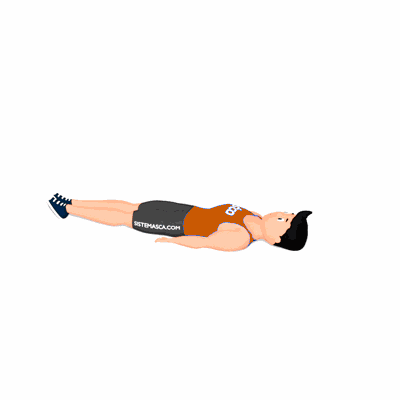

Roll Over

O exercício tem como objetivo promover o alongamento da cadeia posterior, mobilidade da coluna e fortalecimento dos músculos estabilizadores da cintura escapular.
Ficha Técnica
Tipo: Pilates
Grupo Muscular: Costas
Aparelho: Nenhum
Músculos: Nenhum
Como realizar
- Comece a posição deitando-se de costas, com braços e pernas no chão e a coluna vertebral bem alinhada;
- Depois, levante as pernas e puxe os joelhos até que eles fiquem acima do quadril, apoiando-se nos braços e com as palmas das mãos no chão;
- As pernas devem ser projetadas sobre o corpo, para que fiquem paralelas ao chão;
- Quando as pernas estiverem alinhadas com o solo, você pode aumentar um pouco a pressão sobre os braços, para conseguir um melhor apoio, mantendo a cabeça alinhada e sem sobrecarregar a cervical e a lombar;
- Depois de atingir essa posição, o próximo passo é ir desenrolando a coluna aos poucos, mantendo controle e sempre mantendo o abdômen ativo;
- Ao retornar a posição, repita os movimentos.
 RC STORE
RC STORE